Static Program Analysis (Security)
在软件安全领域有两类非常常见且重要的漏洞是注入型漏洞（injection）和信息泄露（Information leaks），这两类漏洞的本质都是信息流（Information flow）问题，而解决信息流安全问题的一种方案就是污点分析技术（Taint Analysis）。
Information Flow Security
Access Control vs. Information Flow Security：
- Access Control（保护敏感数据的标准方法）
- 检查程序是否有获取敏感数据的相应权限
- 关注信息是如何被访问的（accessed）
- Information Flow Security（end-to-end）
- 跟踪信息在程序中的流动以保证程序安全地处理信息
- 关注信息是如何被传播的（propagated）
Information Flow
If the information in variable is transferred to variable , then there is information flow .
例如下面的例子，可以看出信息流分析和之前的指针分析有些类似。
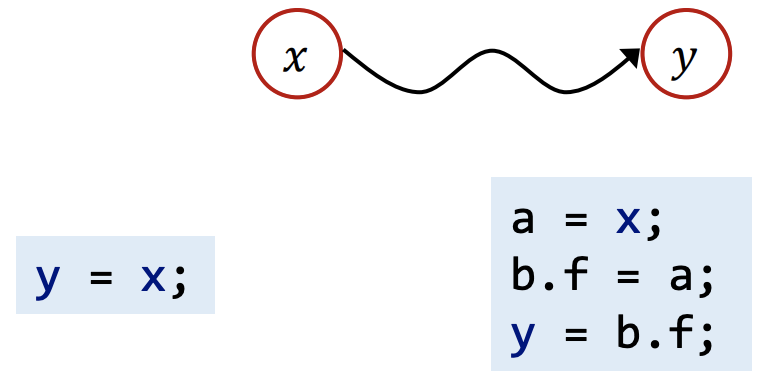Information Flow Security 将信息流和安全进行关联：
- 将程序中的变量分为不同的安全等级（security level）
- 在这些等级之间限定允许的信息流向，如 Information flow policy
Security Level (Classes)
最基础的模型是 two-level policy，变量被分为两类等级：
-
H：high security，机密信息
-
L：low security，公开信息
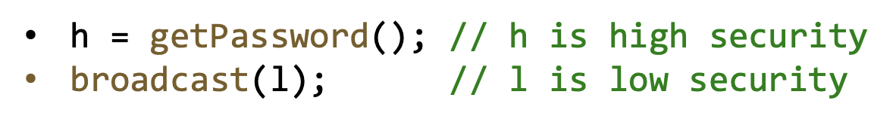
Security levels 可以建模为格（lattice）：
还有一些更为复杂的 security level 划分：
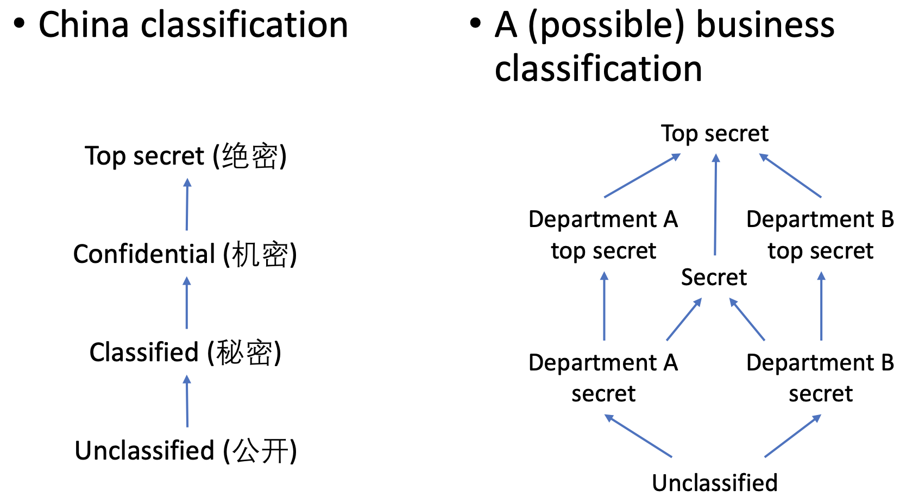Information Flow Policy
一种常见的策略是 Noninterference policy
- 高密级信息不能影响到低密级信息
- 保证攻击者无法通过观测低密级信息来推测出高密级信息
Confidentiality and Integrity
Confidentiality（机密性）
- 防止秘密信息被泄露（上节中的内容都是为了保证机密性）
- 信息泄露类漏洞就是违反了机密性
Integrity（完整性）
-
防止重要信息被不可信的信息所污染
-
注入类漏洞就是违反了完整性
-
典型的注入类漏洞有命令注入，SQL 注入，XSS 攻击等
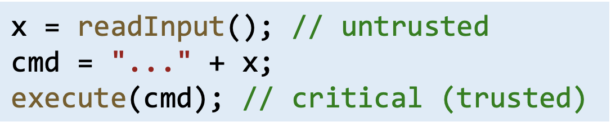
Confidentiality vs. Integrity
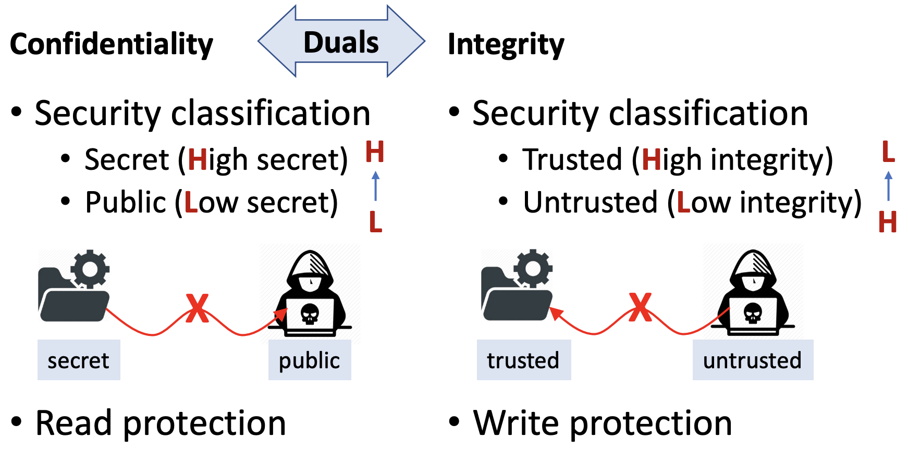Integrity 更加广泛的定义是（在信息流安全之外的定义）保证数据的准确性，完整性和一致性
Maintenance and the assurance of the accuracy, completeness, consistency of data:
Accuracy:
E.g., for information flow integrity, the (trusted) critical data
should not be corrupted by untrusted dataCompleteness
E.g., a database system should store all data completely
Consistency
E.g., a file transfer system should ensure that the file contents of both ends (sender and receiver) are identical
Explicit Flows and Convert Channels
Explicit Flows：直接通过赋值传递信息
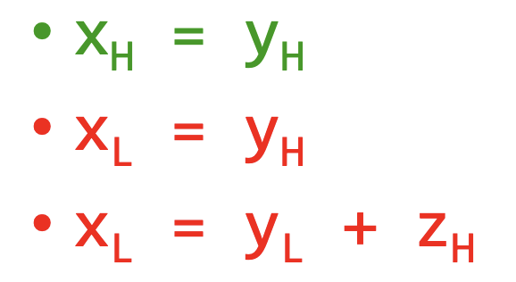Convert/Hidden Channels：隐蔽信道则不通过直接的信息传输
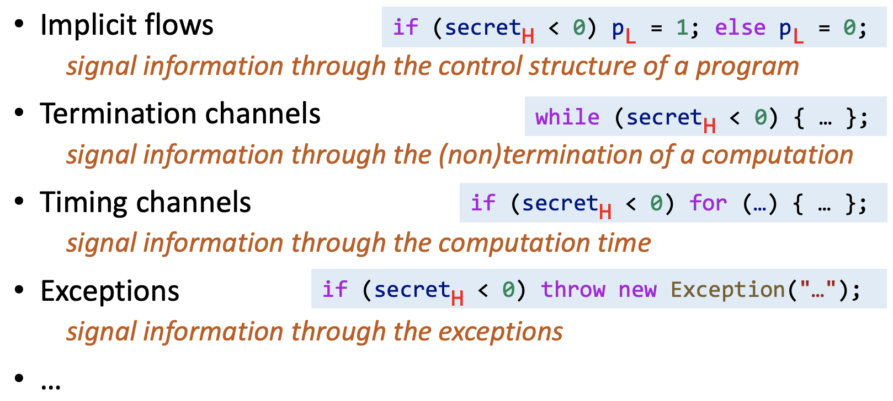然而，隐蔽信道影响的数据量很有限，因此接下来针对显式流进行分析。
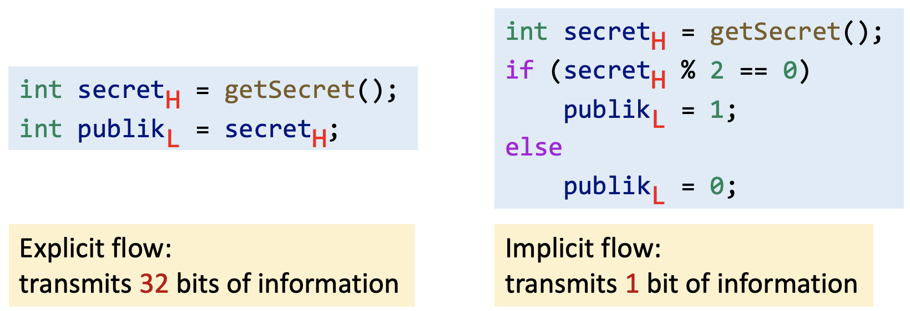Taint Analysis
Introduction
污点分析是一种最常用的信息流分析技术，它将程序中的数据分为两类：tainted data 和 untainted data。
Source：污点传播源，如函数的返回值，可控的外部输入等；
Sink：污点汇聚点，如敏感函数。
污点分析就是追踪 source 点的数据是否会流到 sink 点中。
污点分析的两类应用：
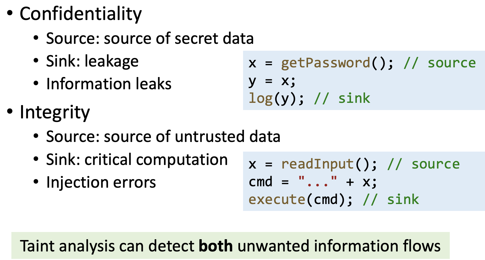Taint and Pointer Analysis
污点分析和指针分析非常类似：
The essence of taint analysis/pointer analysis is to track how tainted data/abstract objects flow through the program.
因此我们可以借助指针分析实现污点分析：
- 将污点数据（tainted data）看做特殊的 objects
- 将污点传播源（source）看做 objects 的创建点（allocation site）
- 借助指针分析传播污点数据
为了简单理解这里采用上下文不敏感的指针分析来实现污点分析：
Domains
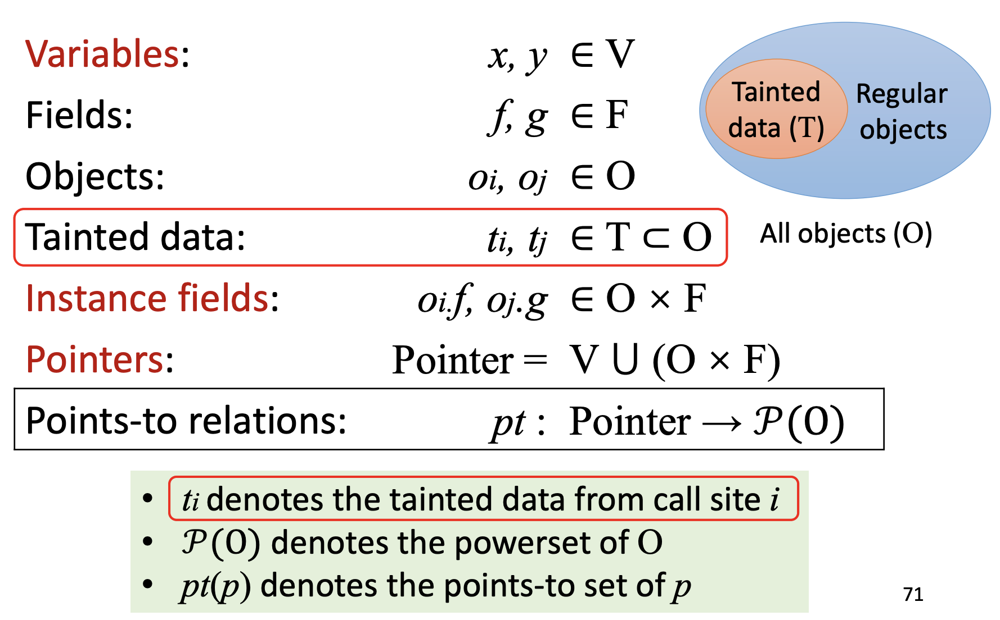Inputs & Outputs
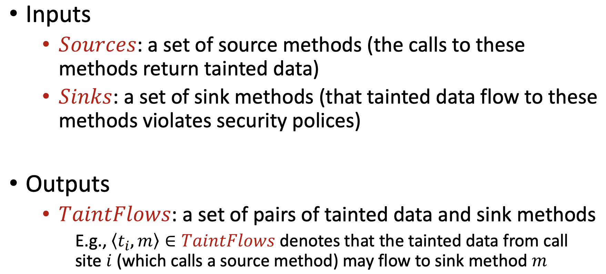Rules
和指针分析中的规则相同：
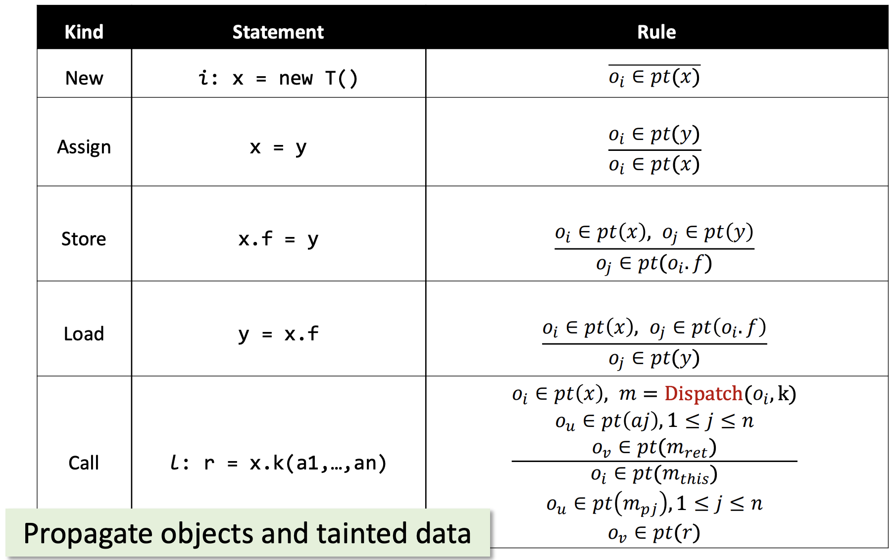不同的是需要额外处理 source 点和 sink 点：
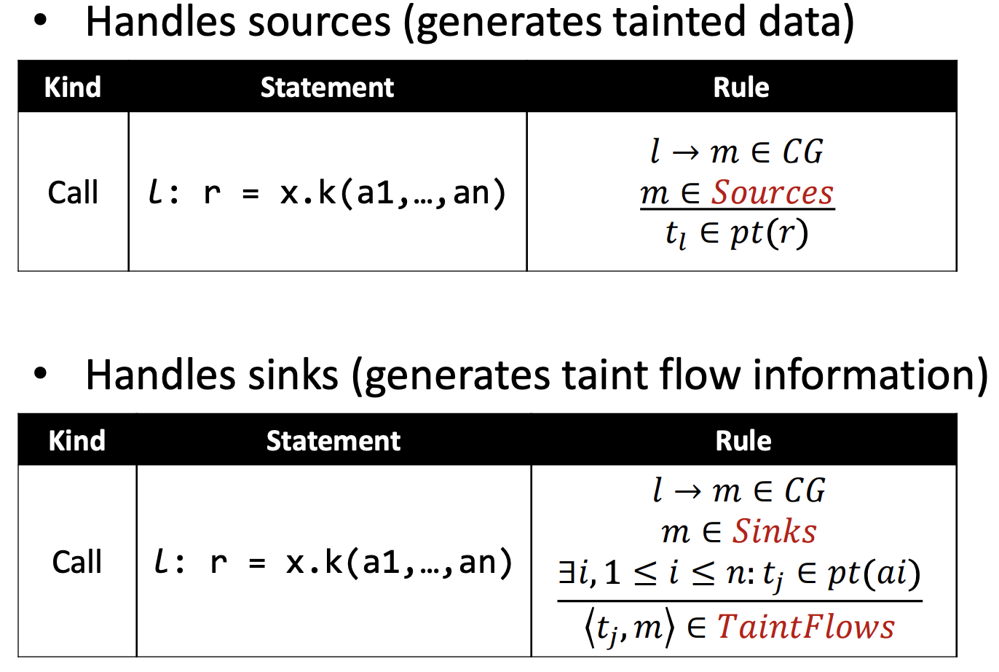Example
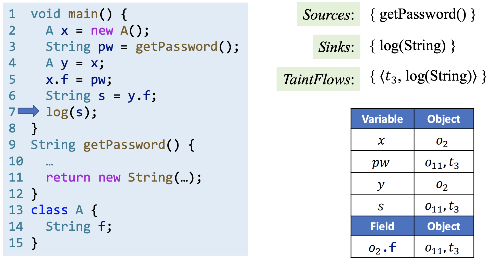注意这里介绍的是最简单的污点分析，主要关注污点分析的核心思想。但真实情况要复杂得多，需要额外处理一些语句和方法，比如 sanitizers（污点消除点）。更为详细的污点分析介绍可见这篇文章。